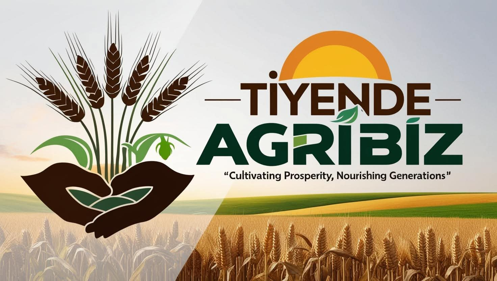
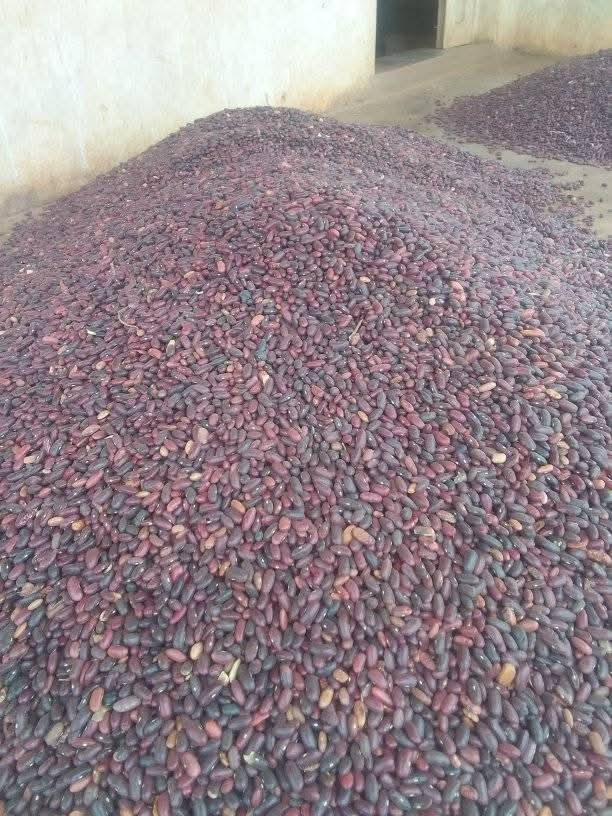
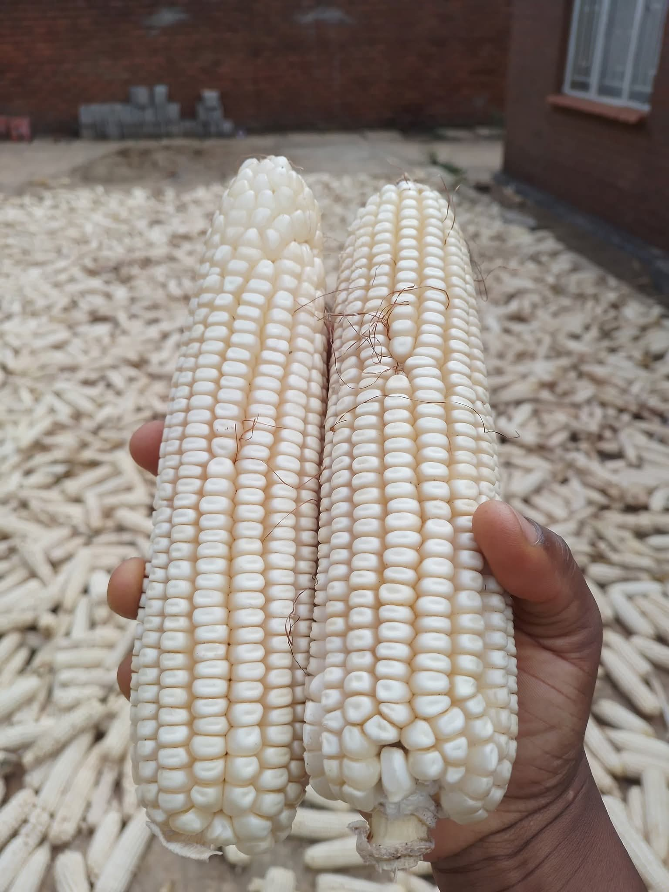
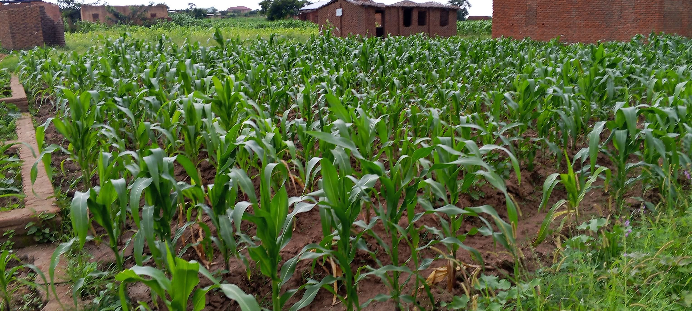

Climate change training
Practical knowledge to understand climate risks and build more resilient farms.

Tiyende AgribizFrom Malawi's farms to trusted markets
Tiyende Agribiz supplies dependable farm produce and helps farmers grow sustainably, adapt to climate change, and reach markets offering fair prices.
Current produce
Availability changes with the season. Contact us to confirm quantities, grades, delivery and current prices.
Loading current stock…
From field to market
Real produce and farming activity from the communities and supply networks we support.



Beyond produce
Practical knowledge to understand climate risks and build more resilient farms.
Methods that improve productivity while protecting soil, water and future harvests.
Training in responsible farming practices that support long-term farm success.
Helping farmers find reliable buyers and better markets with fair maize prices.
Why Tiyende
Our work connects quality agricultural produce with customers who value reliable supply. At the same time, we equip farmers with useful skills and help them find stronger routes to market.
Work with us →Let’s do business
Tell us what you need. We will discuss availability, pricing and the best way we can help.